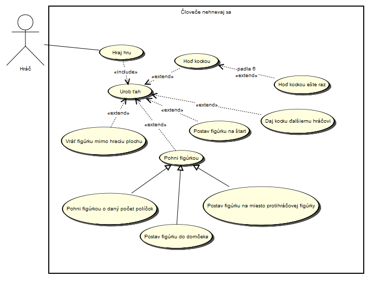

UML - Diagram prípadov použitia (Use Case Diagram)
Diagram prípadov použitia je popri Diagramu tried a Diagramu aktivít jeden z najpoužívanejších UML diagramov.
Používa sa na popis správania systému.
Aktér vo forme symbolickej figúrky (osoba) interaguje v rámci hraníc systému s tzv. Prípadmi použitia (ďalej PP) vo forme malých elíps.
Prípady použitia sú akési, z pohľadu používateľa, viac alebo menej zaujímavé činnosti, ktoré nie sú reprezentované iba grafickou reprezentáciou vo forme elipsy,
ale aj scenárom, ktorý presne popisuje danú činnosť.
Prípady použitia sú prepojené s aktérom, ktorý ich vykonáva alebo je s PP v nejakom inom vzťahu (napr. preberá výstupy). Iný vzťah je medzi viacerými PP , a to vo forme rôznych typov vzťahov.
Vzťah "include" hovorí o závislosti jedného Prípadu použitia na inom, a to tým, že pôvodný PP vyžaduje iný PP a v postupe, v akom má byť programovaná funkčnosť,
predchádza "includovaný" PP pôvodný.
Vzťah "extend" hovorí tiež o závislosti jedného Prípadu použitia na inom, a to tým, že pôvodný PP môže používať aj iný PP, ale nemusí. Orientácia vzťahu je opačná ako v "include", pretože je dôležitejší pôvodný PP a jemu asociovaný PP nie je nevyhnutný pre jeho funkčnosť.
Príklad diagramu prípadov použitia pre hru Človeče nehnevaj sa:

Pre viac informácii odporúčam navštíviť iné zdroje, napríklad Use Case Diagram wiki